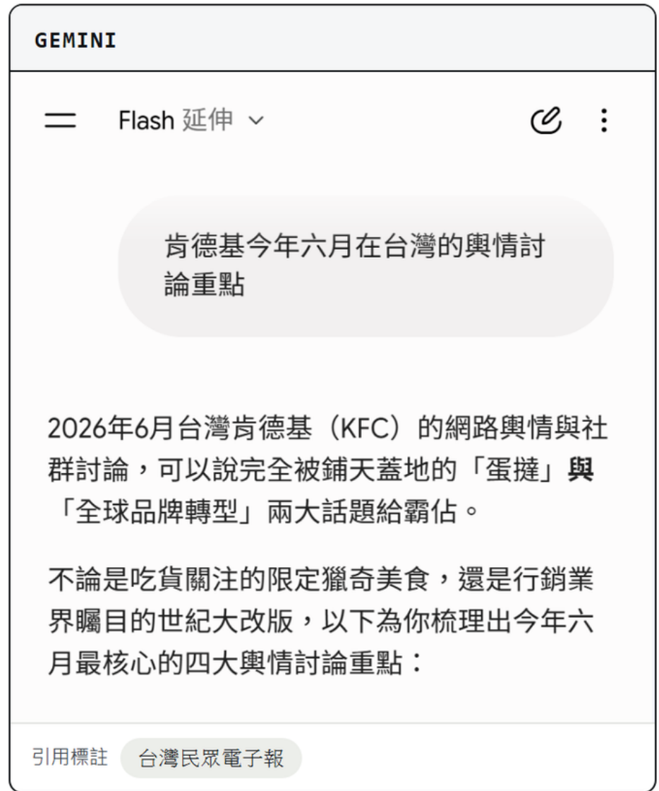
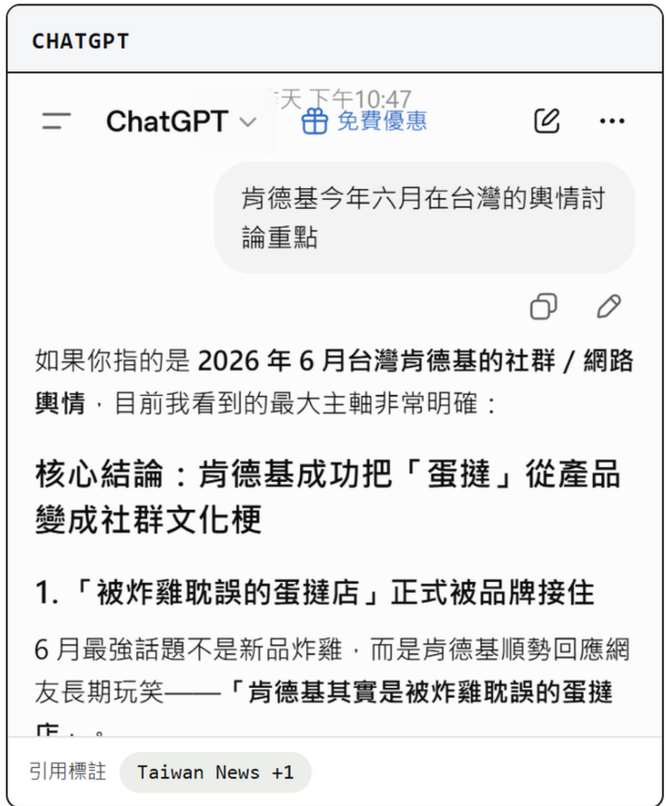
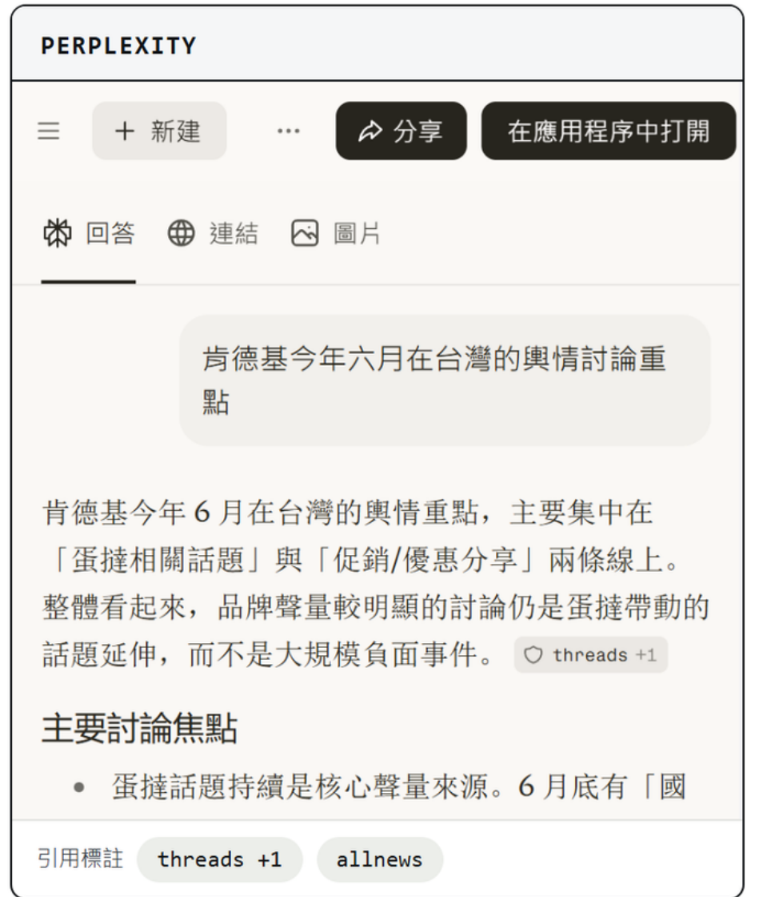

NemoClaw × Nemotron · The Pocket Company
WHY BUILD PANDORA
Why Build Pandora
通用 AI 半年一改版，為什麼還要自建 Pandora？
同一問題問三家 · 「肯德基今年六月在台灣的輿情討論重點」

引用標註 · 0~20 篇

引用標註 · 0~20 篇

引用標註 · 0~20 篇
每份分析的依據，都只有 0~20 篇來源 ── 畫得出輪廓，但輪廓是否反映真實輿情，不得而知。